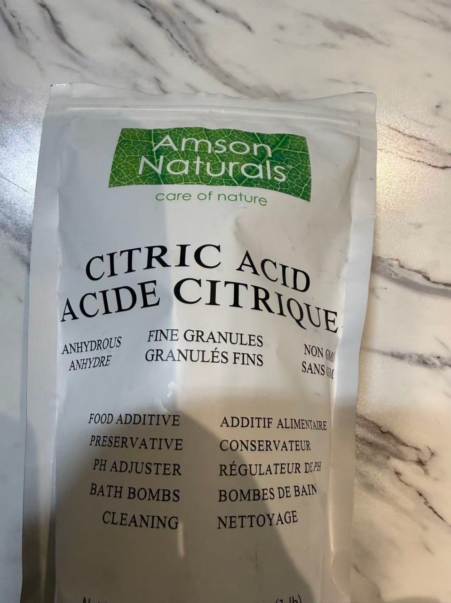
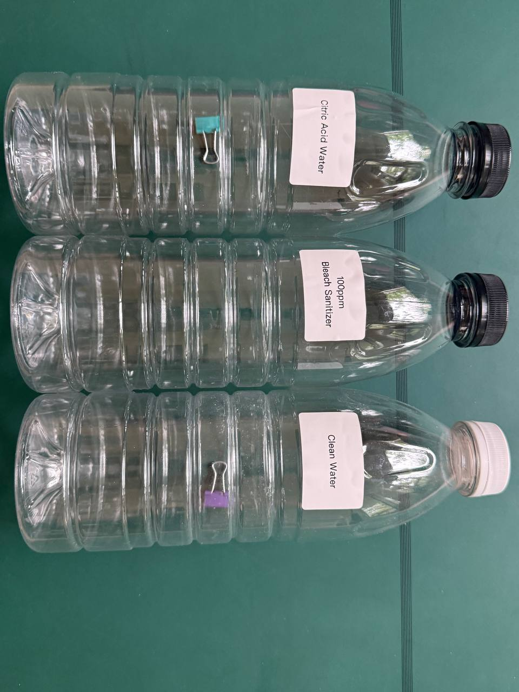
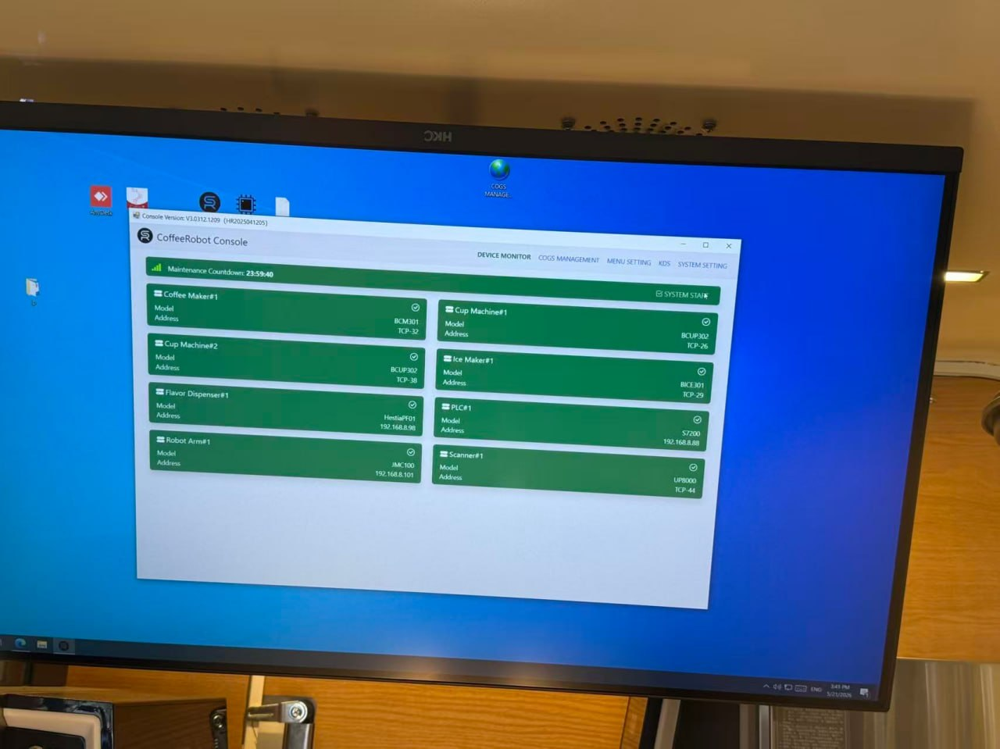
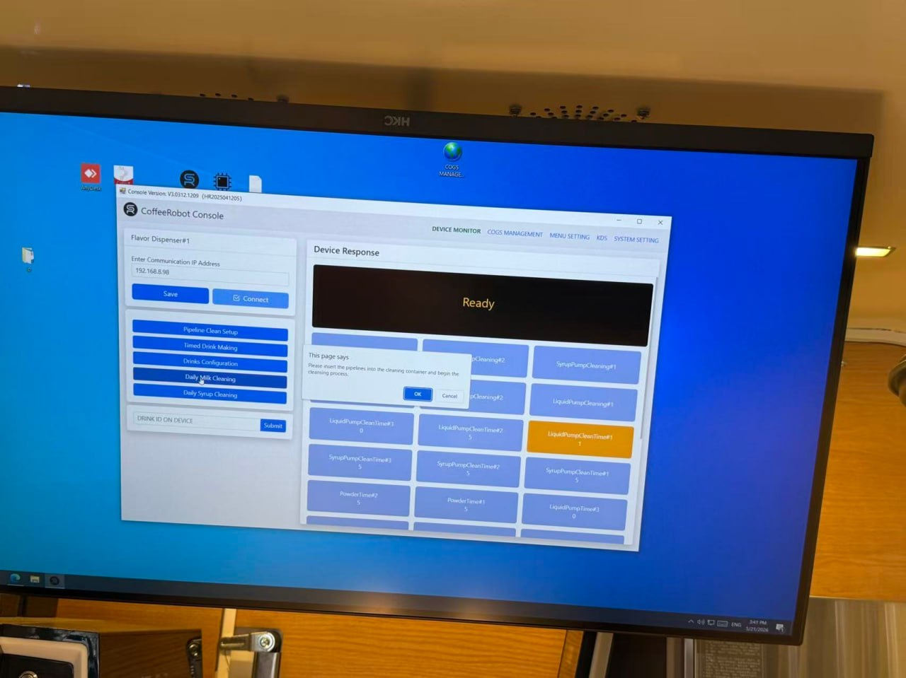

← Back to Checklist▶ VideosC1 Pro Daily SOP — staff-friendly view
D2: Liquid Dispenser Cleaning
Frequency: Daily
Time: 15-20 minutes
Videos: Google Drive Folder
Materials Needed
Prepare 3 bottles before starting:
- Citric Acid Water
1L fresh water + 5g Citric Acid

Citric Acid
- 100ppm Bleach Sanitizer
- Clean Water

Three Bottles for D2 Cleaning
Procedure
Step 1: Find Daily Milk Cleaning on CoffeeRobot Console
CoffeeRobot Console - Device - Flavor Dispenser#1 - Daily Milk Cleaning

CoffeeRobot Console - Device Monitor

CoffeeRobot Console - Daily Milk Cleaning
Step 2: Citric Acid Cleaning Cycle
- Unplug the tubes in Fridge#2 and insert tubes into Citric Acid Water bottle
- Daily Milk Cleaning - Click OK
- Citric acid water is dispensed through the flavor dispenser outlet
Step 3: Clean Water Cycle
- Insert tubes into Clean Water bottle
- Daily Milk Cleaning - Click OK
- Clean Water is dispensed through the flavor dispenser outlet
Step 4: Bleach Sanitizer Cycle
- Insert tubes into 100ppm Bleach Sanitizer bottle
- Daily Milk Cleaning - Click OK
- 100ppm Bleach Sanitizer is dispensed through the flavor dispenser outlet
Step 5: Clean Water Rinse Cycle
- Insert tubes into Clean Water bottle
- Daily Milk Cleaning - Click OK
- Clean Water is dispensed through the flavor dispenser outlet
Step 6: Pump the tea liquid to the dispenser outlet
- Plug the tubes to the containers
- Drink ID on device - input "8" - submit
- Make sure to see tea liquid dispensed through the flavor dispenser outlet
Important Warnings
⚠️ Use bottles in correct order — Citric Acid → Clean Water → Bleach Sanitizer → Clean Water
⚠️ Do NOT skip bleach sanitizer — Required for food safety
⚠️ Complete all rinse cycles — Ensure no chemical residue
⚠️ Make sure to see tea liquid dispensed through the flavor dispenser outlet to successfully complete this procedure
Last Updated: 2026-05-25
Version: 1.0 (Simplified - Follow Screen Prompts)